Студия машинной вышивки BARTULE
Наши направления
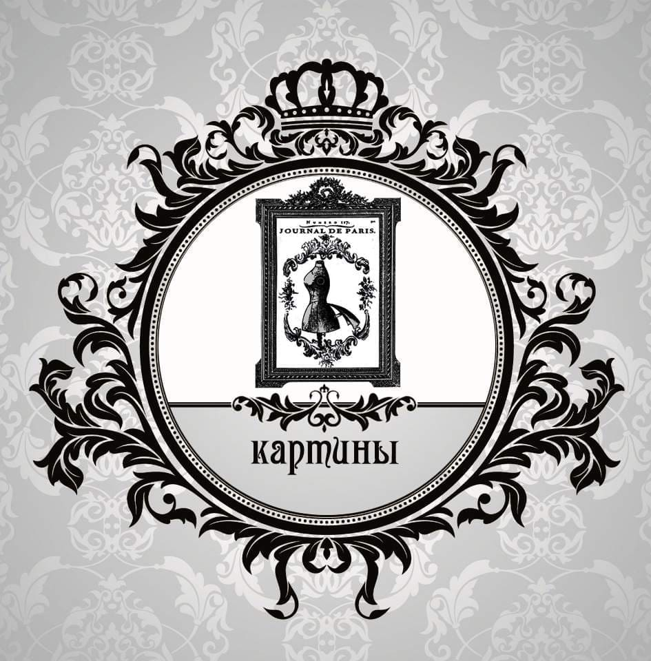
Вышитые картины
Создание эксклюзивных панно и картин с эффектом ручной вышивки. Идеальный подарок и изюминка вашего интерьера.
Узнать больше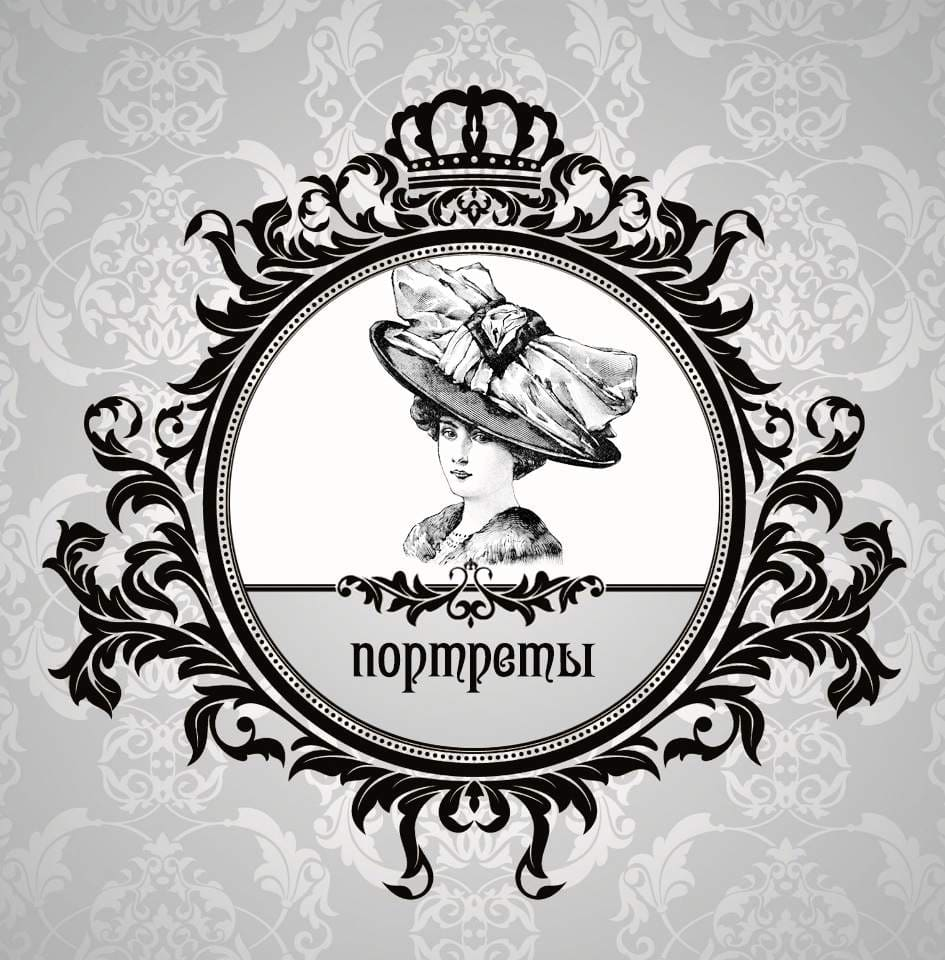
Вышитые портреты
Перенесем ваше фото или семейный портрет на ткань. Точная детализация и плавные переходы цветов с помощью машинной вышивки.
Узнать больше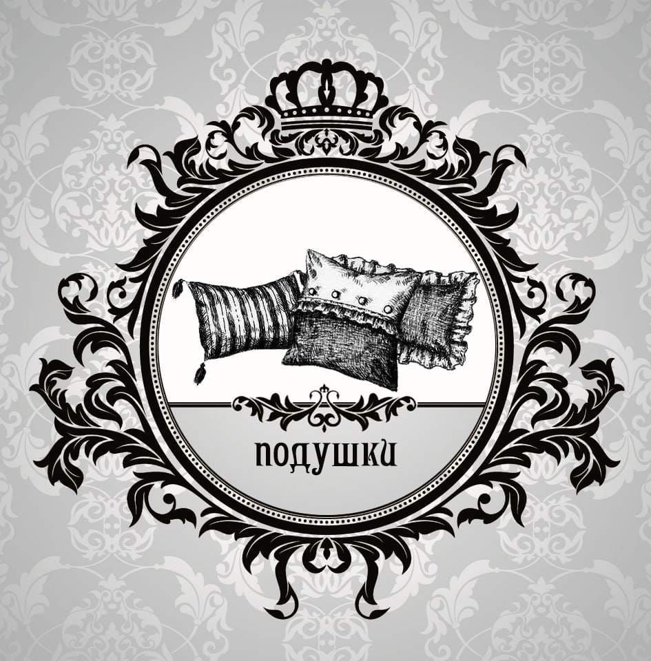
Декоративные подушки
Брендирование домашнего текстиля. Элегантные вензеля, логотипы или классические узоры на подушках для вашего дома.
Узнать больше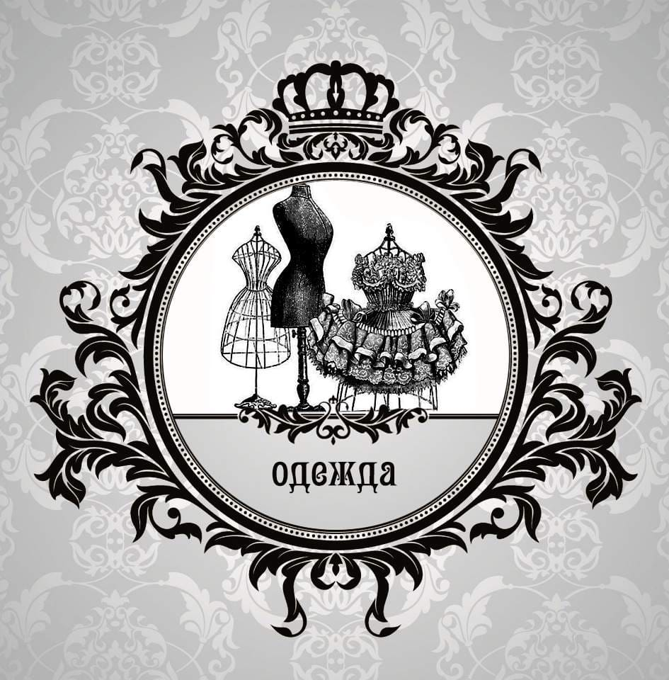
Вышивка на одежде
Кастомизация и брендирование одежды: от корпоративных рубашек до эксклюзивных вечерних платьев и верхней одежды.
Узнать большеПроцесс создания вышивки
От макета до готового изделия
Машинная вышивка — это синтез творчества и программирования. Мы переводим ваши логотипы и рисунки в специальные форматы (PES, DST), настраиваем плотность стежка и цветовую палитру.
Наши специалисты следят за процессом на каждом этапе, чтобы ни одна нить не легла неправильно. Это гарантирует долговечность и идеальный внешний вид изделия даже после множества стирок.
Популярные техники:
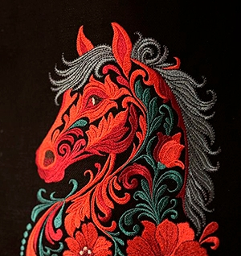
Гладь (Satin)
Плотная, блестящая вышивка параллельными стежками. Идеально подходит для логотипов и четких контуров.
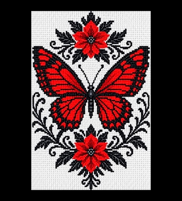
Крестик
Классическая техника вышивки пересекающимися стежками. Создает уютный, домашний и винтажный вид.
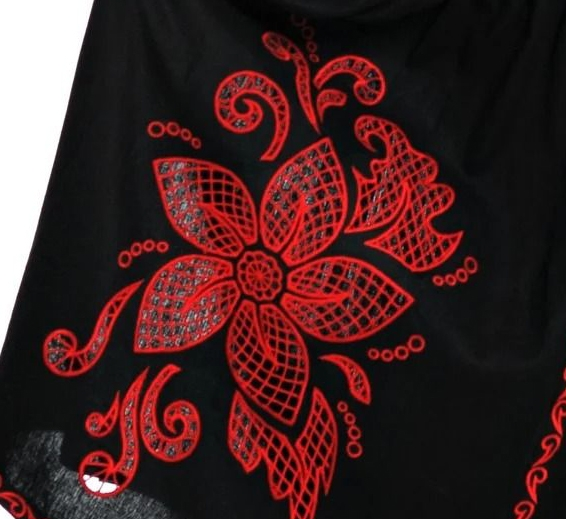
Ришелье
Ажурная вышивка с вырезанными участками ткани. Выглядит как изысканное кружево на легких тканях.
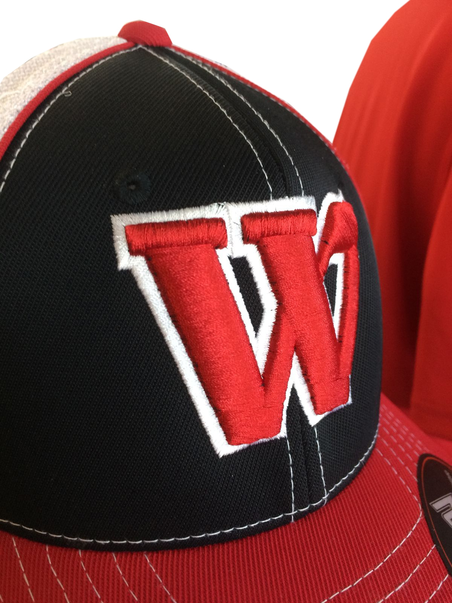
Объемная (Puff)
Техника 3D-вышивки с использованием специальной подложки. Придает элементам рельефность.
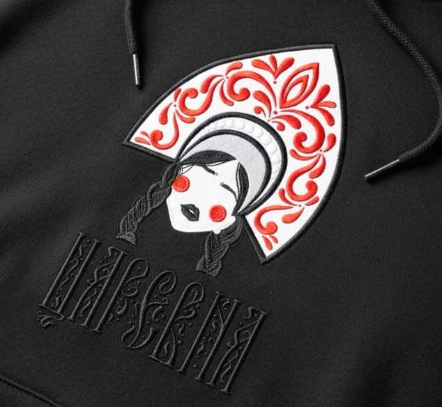
Аппликация
Нашивание на основу кусочков ткани с последующей обработкой краев вышивкой. Экономит время и создает яркие акценты.
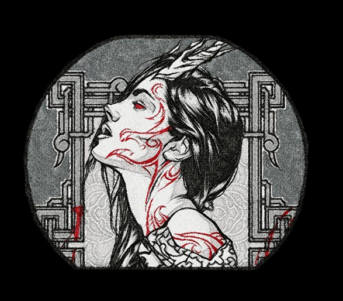
Фотостежок
Передача фотографий и сложных картин с помощью миллионов мелких стежков разных оттенков.
Популярные сферы применения:
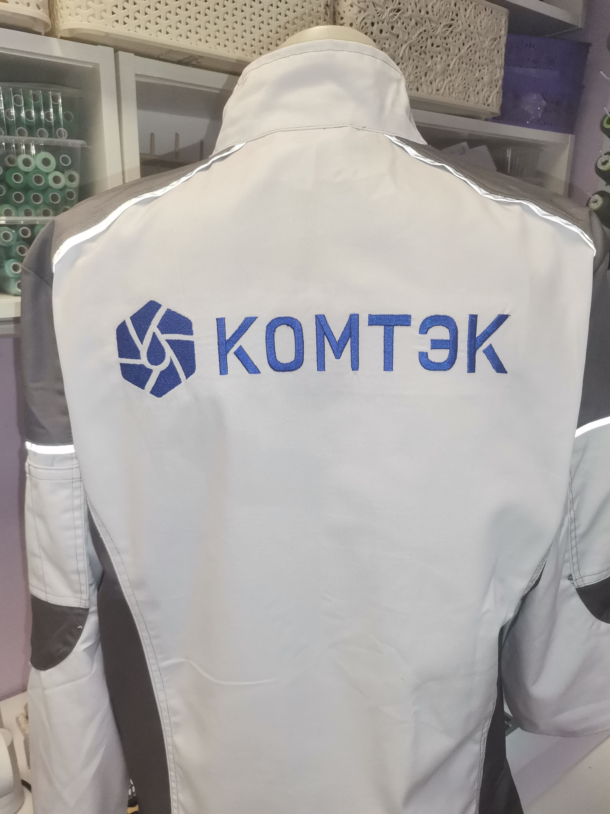
Спецодежда
Вышивка логотипов и имен на рабочей форме. Долговечное решение для брендирования сотрудников.
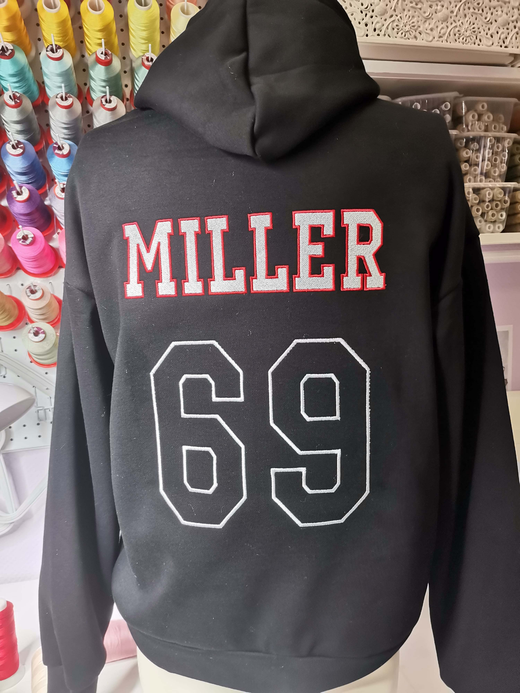
Спортивная форма
Нанесение номеров, фамилий и клубной символики на футболки, худи и ветровки.
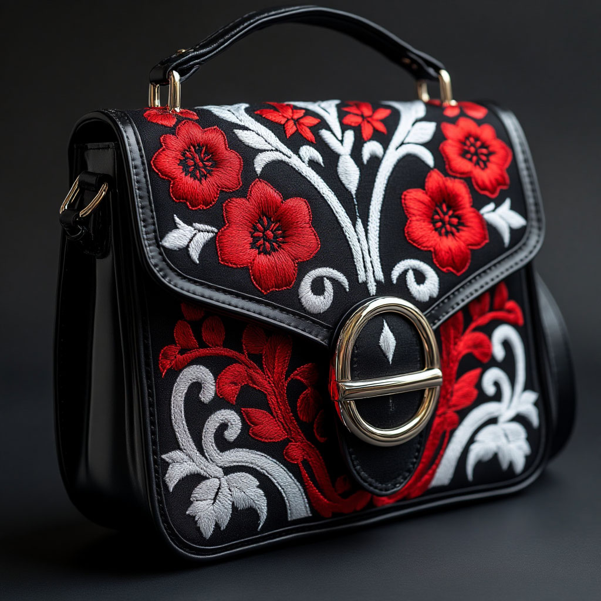
Аксессуары
Элегантная вышивка на сумках, ремнях, кошельках и головных уборах (кепки, шапки).
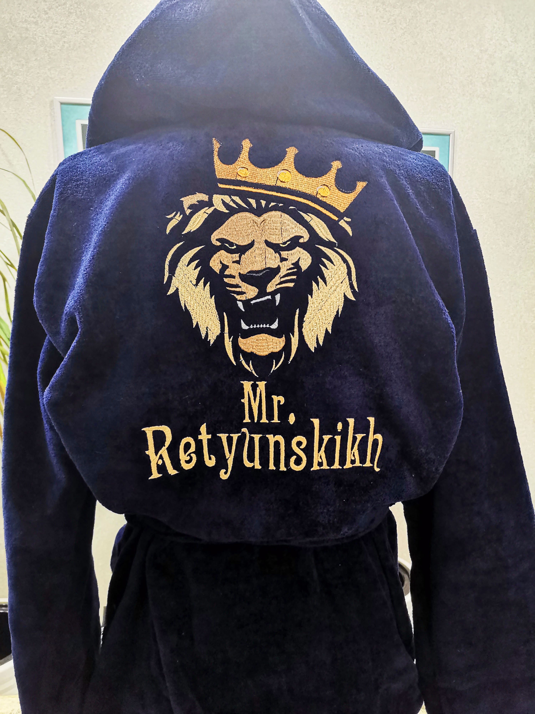
Домашний текстиль
Уютные монограммы на халатах, полотенцах, подушках и постельном белье.
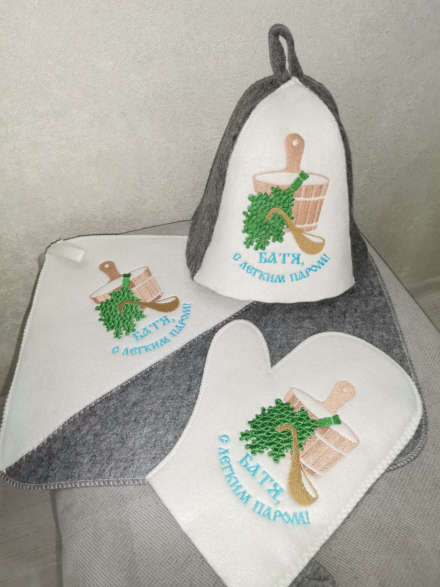
Подарки
Персонализированные подарки с именной вышивкой для близких и партнеров.
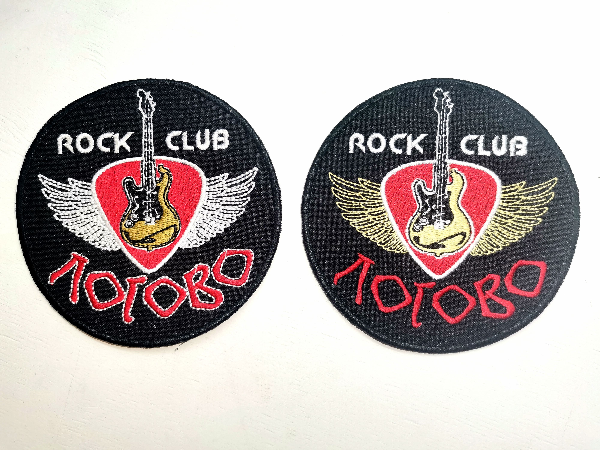
Реклама
Создание ярких вышитых шевронов и нашивок для продвижения вашего бренда.
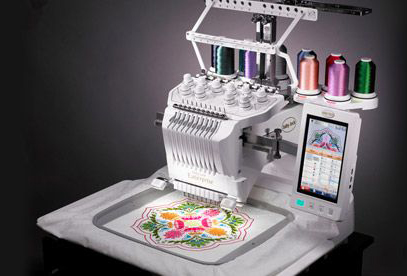